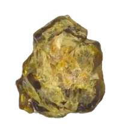

Powerfull Avengers Rock
only at stoneMan
stoneMan is a website that sells all the stones in the Movie Avangers Infinity War. The strongest stone ever created in the Universe.
Buy It

stoneMan is a website that sells all the stones in the Movie Avangers Infinity War. The strongest stone ever created in the Universe.
Buy It